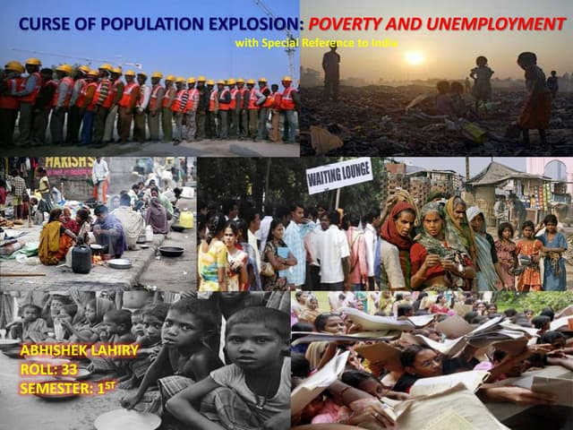

Planet Overload
Understanding Overpopulation: The Problem
Overpopulation occurs when a species' population exceeds the carrying capacity of its environment. For humans, it signifies a point where our numbers cause measurable deterioration in the quality of life, environmental health, and resource availability. It is not just about the consumption of resources and the production of waste, placing immune strain on the planet's ecosystems.
The consequences of overpopulation are far-reaching and interconnected. It directly drives resource scarcity, leading to food and water shortages, and accelerates habitat destruction to make way for housing and agriculture. This loss for biodiversity is compounded by increased pollution and greenhouse gas emmisions, intensifying climate change. Furthermore, rapid population growth often outspaces a region's ability to provide essential services, worsening social issues like poverty, unemployment and not enough healthcare and education systems.
Adressing overpopulation is not aobut blaming individuals but about advocating for systemic, ethical, and sustainable solutions. The most effective strategies globally have been empowering women through education and economic opportunity, ensuring universal access to family planning resources and healthcare, and promoting sustainable economic models that do not equate progress with endless consumption. Understanding this complex issue is the critical first step toward fostering a global community that can thrive in balance with the natural world for centuries to come.